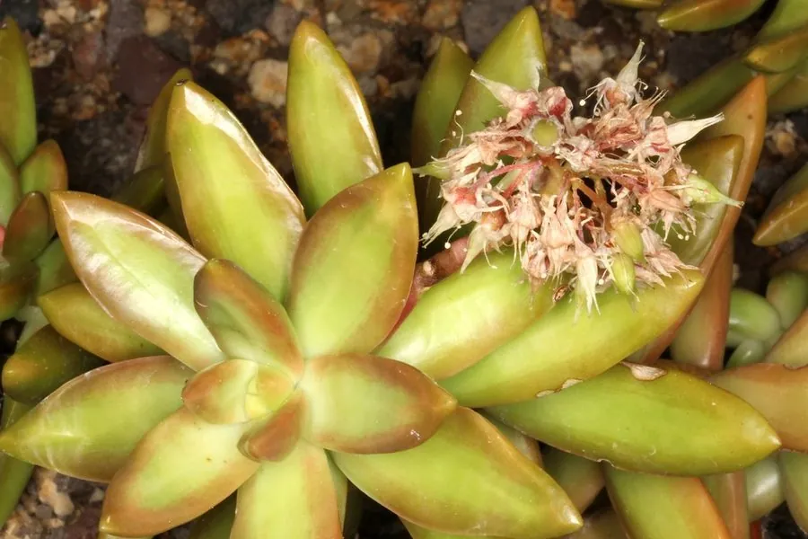

多肉植物 · 植物界
黄丽 Sedum adolphi

景天科景天属多年生肉质植物，叶片肥厚、呈黄绿色，日照充足时转为金黄并泛红晕，是色彩明快的普货多肉。
- 分类
- 门被子植物门纲木兰纲目虎耳草目科景天科属景天属
- 栖息环境
- 原产墨西哥半干旱地区，栽培需充足光照、干燥通风
- 地理分布
- 原产墨西哥；中国各地作为观赏多肉广泛栽培
- 保护级别
- 暂无评估；栽培观赏植物，不涉及保护等级
物种志
黄丽为景天科景天属多年生肉质植物，茎短粗，叶片排列成紧密的莲座状。叶片卵形，肥厚多汁，先端渐尖，表面光滑，常态下为黄绿色，光照充足、温差大时转为金黄色，叶尖和叶缘泛红。花期春季，花茎从叶腋抽出，花小，星形，黄色；蓇葖果，种子细小。
黄丽原产墨西哥，中国各地广泛栽培。它喜光、耐旱，春秋为生长旺季，夏季高温时需遮阴控水；适宜疏松透气、排水良好的基质，忌积水和闷湿。叶色明快、养护简单，是新手入门和组合盆栽的常用品种；光照不足时叶片会变绿、徒长。繁殖以叶插和枝插为主，成活率高。
形态与习性
- 株型莲座状，茎短粗
- 叶色黄绿，出状态金黄泛红
- 花期春季，花小、黄色
- 光照喜光，光照不足易徒长
- 水分耐旱，干透浇透
- 土壤疏松排水良好的基质
- 主要用途多肉盆栽、组合盆景
趣味知识
- 黄丽在阳光充足时叶片金黄透亮，因此得名，光照不足则会变绿。
- 它叶片表面的蜡质层能减少水分蒸发，是典型的旱生结构。
- 黄丽叶插成活率高，是新手练习叶插的常用品种。